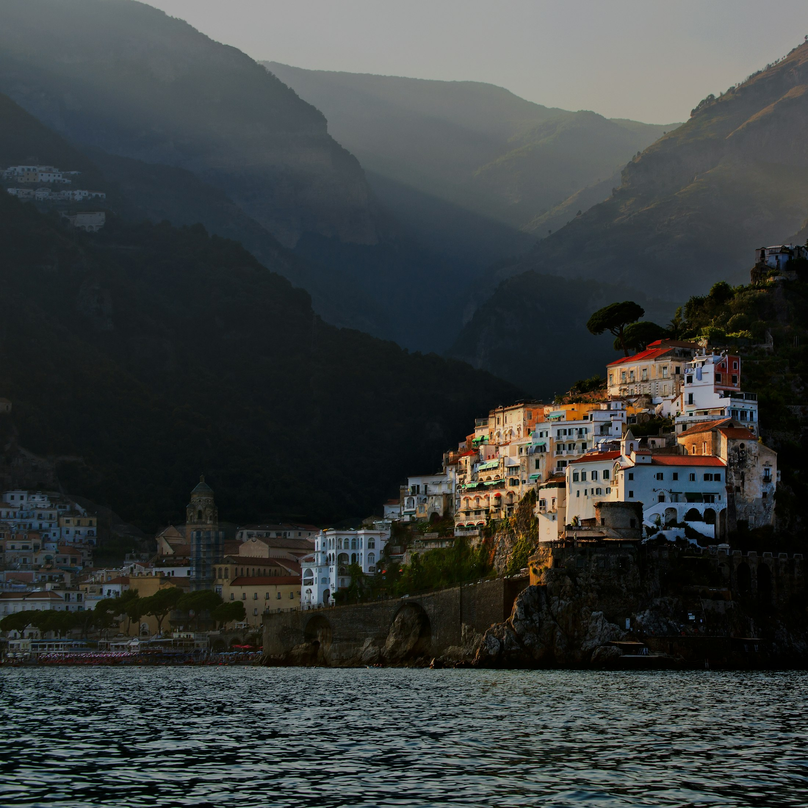

Days by the sea
Slow mornings, hidden coves and time on the water. We shape your days around the coastline that calls to you, with room to linger when somewhere feels just right.
There is a certain kind of magic to a Mediterranean summer — slow mornings by the sea, hidden coves reached by boat, long lunches that somehow turn into dinner and evenings with nowhere else to be.
From the timeless beauty of the Italian coast and the effortless energy of the Greek islands to the shores of the South of France and Bodrum, these are places we return to again and again. We seek out the hotels with a sense of place, the tables worth planning around and those special corners you'll want to keep to yourself.
Italy · Greece · France · Spain · Turkey

Slow mornings, hidden coves and time on the water. We shape your days around the coastline that calls to you, with room to linger when somewhere feels just right.
A long lunch can become a favourite memory. From Italy and Greece to France, Spain and Turkey, food is part of the way we bring a place to life.
The hotel or villa sets the rhythm of a summer away. We look for places with character, thoughtful details and a setting that makes you want to stay a little longer.
One beautiful base or a journey along the coast — we begin with how you want your summer to feel.
Tell us about the places you are drawn to and the pace you enjoy. We will bring together the stays, tables and experiences that make the journey your own.